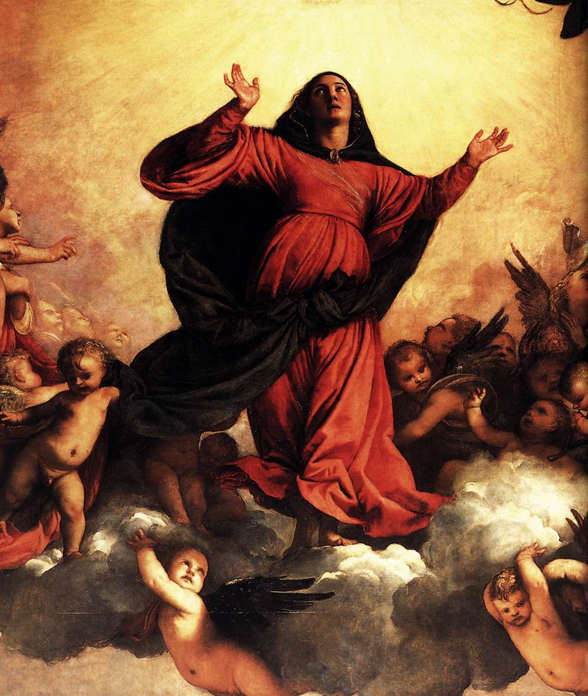

Malarskie krajobrazy Rilkego
Tycjan
Jakąż radość przyniosło nam powtórne spotkanie z tymi wszystkimi rzeczami, tak drogimi naszemu sercu, rzeczami, o które drżeliśmy przez te lata wojny! Sta. Maria Gloriosa pędzla Tycjana, teraz znów na swoim miejscu nad głównym ołtarzem kościoła Frari, budziła nieopisane wrażenie. Unosząc się ku niebiosom, opromieniona jasnym światłem, jakiż tworzyła kontrast z zimną i duszną atmosferą Akademii!
— Marie von Thurn und Taxis w swym Wspomnieniu o ponownym spotkaniu z Rilkem w Wenecji w roku 1920
Tycjan „Assunta” (detal), 1518, Wenecja, Santa Maria Gloriosa dei Frari